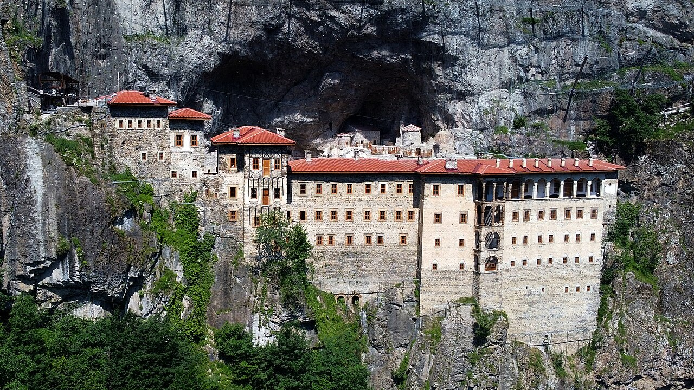

Karadeniz'in İncisi: Trabzon
Nüfusu 800 bini aşan, eşsiz doğası ve binlerce yıllık tarihiyle büyüleyen şehrimiz.

Kültürel Mirasımız: Sümela Manastırı
Maçka ilçesindeki Altındere Vadisi'ne hakim Karadağ'ın eteklerinde sarp bir kayalık üzerine kurulan Sümela Manastırı, Trabzon'un ve Türkiye'nin en önemli kültürel miraslarından biridir.
Halk arasında "Meryem Ana" adıyla da bilinen manastır, vadiden yaklaşık 300 metre yükseklikte yer almaktadır. Eşsiz freskleri, su kemerleri, kütüphanesi ve öğrenci odalarıyla mimari bir şaheser olan bu yapı, yüzyıllar boyunca bölgenin dini ve kültürel merkezi olmuştur.